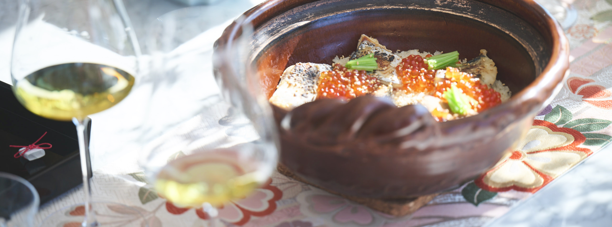
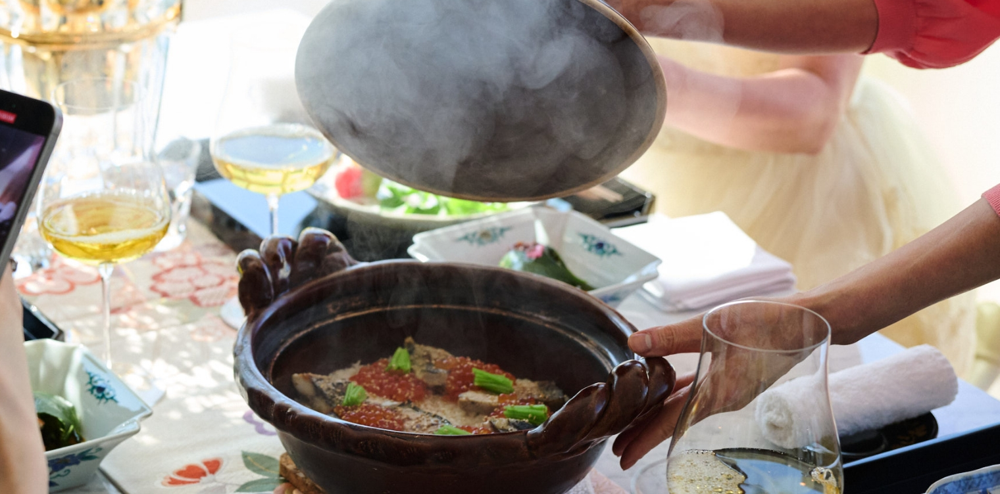
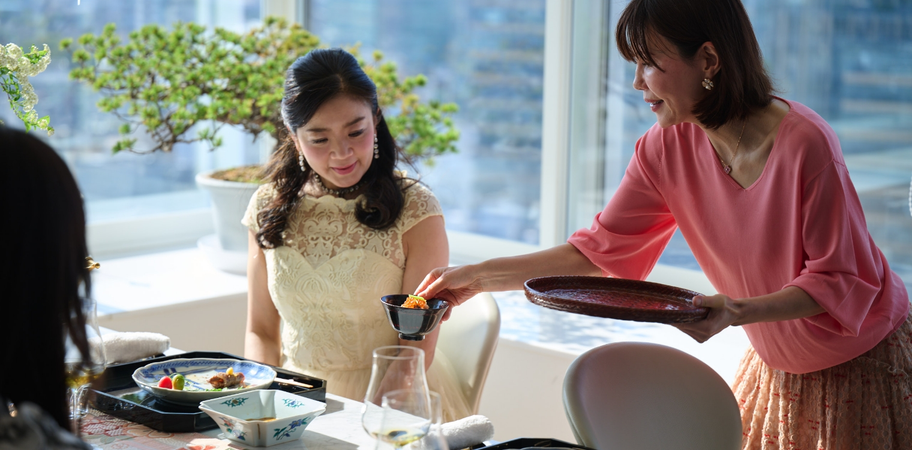
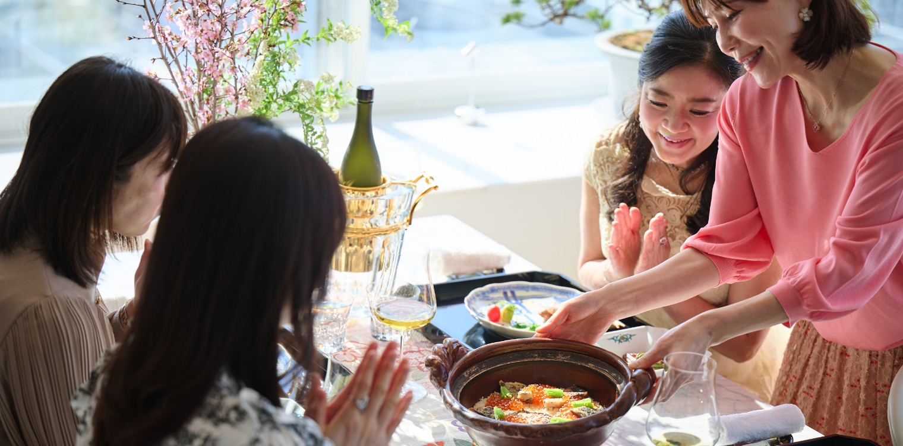
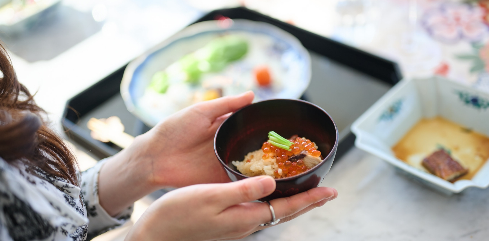
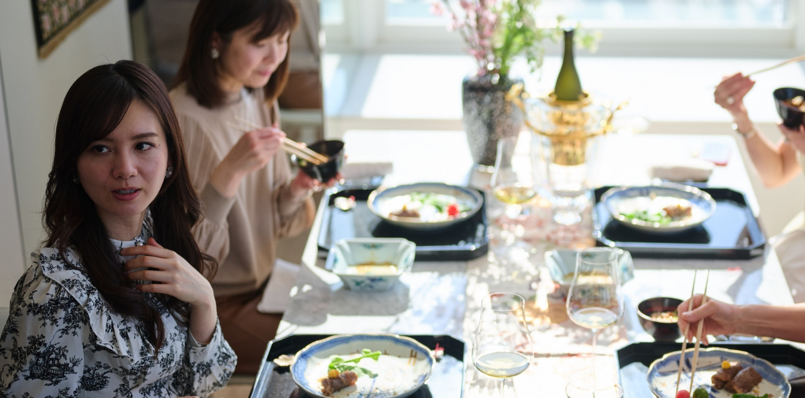

「日本の極み」を使ったホームパーティー
4
土鍋ごはん

三品めは「土鍋ごはん」。使っていただいたのは、「お米食べくらべセット」 「北海道根室産 いくら醤油漬け」 「きときと酒粕漬け」の三商品。
「お米食べくらべセット」は、その名の通り、6種のお米を食べ比べることのできるセットで、すべて、厳しい基準をクリアした特別栽培米。
「北海道根室産 いくら醤油漬け」は鮮度が良いまま近くの工場へ運びその日のうちに加工。山形「マルジュウ醤油」の本醸造醤油とあごだしをベースにシンプルな味付けで、いくら本来の味を活かしています。
「きときと酒粕漬け」は、プランクトンに恵まれた富山湾で水揚げされた新鮮な魚を加工、IWCでトロフィー賞に輝いた「純米大吟醸熊野のしずく」の酒粕を使い、職人が一枚一枚手作業で作っています。

- 内田みち代 さん
- お米は6種類あるんですが、今回は「夢ごこち」を使いました。一袋が２合なので２合のレシピです。お魚の味がしっかり分かるよう、ご飯にはほとんど味をつけていません。ぶり・さば・サワラ・ふくらぎを使って、いろんな味を混ぜていまして。お魚は別で焼いて、いくらはそのまま瓶から乗せました。
こうして土鍋を開けると、湯気がふわっと立って、皆さん喜んでくださいますから。

- 内田みち代 さん
- いくらが綺麗でしょう！ おもてなしにすごくいいですよ、いくらとお魚で、何も大変なことがない（笑）。

- 酒匂ひろ子 さん
- すごく美味しい…。
- 壁谷玲子 さん
- お米がすごくもちもちしていて。
- 酒匂ひろ子 さん
- 粒がしっかりしてますね。
- 内田みち代 さん
- 炊いた瞬間からわかりました、美味しそうだなって。お米にうるさい人間なので（笑）。
今回はお出ししてないですけど、食べ比べたらササニシキが一番違いました。粘りがなくてあっさりしてる。ミルキークイーンは粘りがあって、透明感もあって。どれも美味しかったです。

- 松野エリカ さん
- 私、実はいくらがダメなんですけど、これは全然平気！ お醤油がいいんでしょうか、臭みもなくて、これは全然食べれます。
- 壁谷玲子 さん
- いくらの味付け、いいですね、薄すぎずしっかりで、程よい感じ。
- 内田みち代 さん
- いくらの醤油漬けって、しょっぱくて、黒っぽいものが多いですけど、これは色が綺麗でお料理に使いやすいんですよ。醤油じゃなくて塩かな、と思うくらい。
- 酒匂ひろ子 さん
- お魚、柔らかいですね！
- 壁谷玲子 さん
- 酒粕の香りがしっかりします。
- 内田みち代 さん
- お魚もちょうどいいお味なんですよね、私は添加物が気になるんですが、これは使ってなくてとっても優秀。お家で作る味と一緒で嬉しくなりました。
- 壁谷玲子 さん
- 私は仕事でフランスによく行くんですが、フランス人、私よりもお米が好きなんですよ。
- 松野エリカ さん
- フランスでは和食をよく作られるんですか？
- 壁谷玲子 さん
- いえ、私自身は和食じゃなくても大丈夫な方で、フランス人の方が和食好きじゃないかなって（笑）。
作り方を見る
【材料】
・「きときと酒粕漬け」 3切れ（半分に切る）
・「いくら醤油潰け」 100g
・三つ葉適量
〈A〉
・米（夢ごこち） 2合
〈B〉
・昆布出汁 330cc
・純米酒 20cc
・薄口醤油 10cc
・天然の塩 2つまみ
【作り方】
- 「きときと酒粕漬け」はグリルで焦げない様に弱火で両面焼く。
- Aは洗ってから30 分以上浸水しザルにあげBを入れ、中火14 分で炊きあげる。
- 1といくらと三つ葉を入れ5分蒸らす。